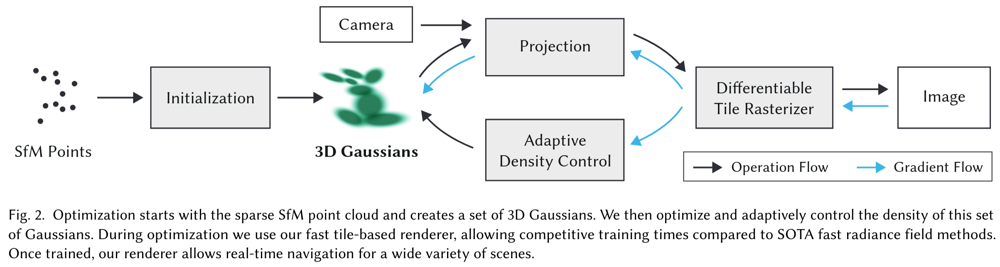

3D Gaussian Splatting¶
3DGS 是基于 Splatting 和机器学习的三维重建方法。其中 Splat 是拟声词，意为“啪叽一声”：我们可以想象三维场景重建的输入是一些雪球，图片是一面砖墙，图像生成过程就是向墙面扔雪球的过程；每扔一个雪球，墙面上会留有印记，同时会有啪叽一声，所以这个算法也被称为抛雪球法，翻译成“喷溅”也很有灵性。所以 splatting 的核心有三步：一是选择“雪球”，也就是说我要将它捏成一个什么形状的雪球；二是去抛掷雪球，将高斯椭球从3D投影到2D，得到很多个印记；三则合成这些印记以形成最后的图像。
捏雪球：利用协方差控制椭球形状¶
其实我们的输入是SfM得到的稀疏点云，而由于点是没有体积的，我们首先需要将点膨胀成正方体、球体或者提取基础的三维几何形状，而我们之所以选择高斯分布作为椭球，则是因为它良好的数学性质，比如高斯分布在仿射变换后依然是高斯分布，而沿着某个轴积分将高斯分布从3D降到2D后其依然服从高斯分布。高斯分布的数学描述如下，第二个等号给出了三维情形的展开式。
同时，任意椭球都可以由某个椭球通过通过仿射变换得到，而其中仿射变换左乘的矩阵 \(\small A\)可以视为旋转和缩放这两个作用的合成，即 \(\small A=RS\)：
特别地，当 \(\small x\) 服从标准正态分布时，仿射变换得到的协方差矩阵为 \(\small RSS^TR^T\)；反过来，给定协方差矩阵 \(\small\Sigma\)，我们可以通过特征值分解得到 \(\small R\) 和 \(\small S\)，即 \(\small\Sigma=Q\wedge Q^T=Q\wedge^{1/2}\wedge^{1/2} Q^T\)。
仿射变换对应的 computeCov3D 函数代码
代码 forward.cu 中的 computeCov3D 函数讲的就是这个仿射变换，scale 即为上述 \(x\)， float* cov3D 则用以存储协方差矩阵，只是传入的 glm:vec4 rot4 四元数使得代码多了一个计算旋转矩阵的过程。
// Forward method for converting scale and rotation properties of each
// Gaussian to a 3D covariance matrix in world space. Also takes care
// of quaternion normalization.
__device__ void computeCov3D(const glm::vec3 scale, float mod, const glm::vec4 rot, float* cov3D)
{
// Create scaling matrix
glm::mat3 S = glm::mat3(1.0f);
S[0][0] = mod * scale.x;
S[1][1] = mod * scale.y;
S[2][2] = mod * scale.z;
// Normalize quaternion to get valid rotation
glm::vec4 q = rot;// / glm::length(rot);
float r = q.x;
float x = q.y;
float y = q.z;
float z = q.w;
// Compute rotation matrix from quaternion
glm::mat3 R = glm::mat3(
1.f - 2.f * (y * y + z * z), 2.f * (x * y - r * z), 2.f * (x * z + r * y),
2.f * (x * y + r * z), 1.f - 2.f * (x * x + z * z), 2.f * (y * z - r * x),
2.f * (x * z - r * y), 2.f * (y * z + r * x), 1.f - 2.f * (x * x + y * y)
);
glm::mat3 M = S * R;
// Compute 3D world covariance matrix Sigma
glm::mat3 Sigma = glm::transpose(M) * M;
// Covariance is symmetric, only store upper right
cov3D[0] = Sigma[0][0];
cov3D[1] = Sigma[0][1];
cov3D[2] = Sigma[0][2];
cov3D[3] = Sigma[1][1];
cov3D[4] = Sigma[1][2];
cov3D[5] = Sigma[2][2];
}
抛雪球：为透视变换引入雅可比¶
对非线性变换的局部线性近似
// Forward version of 2D covariance matrix computation
__device__ float3 computeCov2D(const float3& mean, float focal_x, float focal_y, float tan_fovx, float tan_fovy, const float* cov3D, const float* viewmatrix)
{
// The following models the steps outlined by equations 29
// and 31 in "EWA Splatting" (Zwicker et al., 2002).
// Additionally considers aspect / scaling of viewport.
// Transposes used to account for row-/column-major conventions.
float3 t = transformPoint4x3(mean, viewmatrix);
const float limx = 1.3f * tan_fovx;
const float limy = 1.3f * tan_fovy;
const float txtz = t.x / t.z;
const float tytz = t.y / t.z;
t.x = min(limx, max(-limx, txtz)) * t.z;
t.y = min(limy, max(-limy, tytz)) * t.z;
glm::mat3 J = glm::mat3(
focal_x / t.z, 0.0f, -(focal_x * t.x) / (t.z * t.z),
0.0f, focal_y / t.z, -(focal_y * t.y) / (t.z * t.z),
0, 0, 0);
glm::mat3 W = glm::mat3(
viewmatrix[0], viewmatrix[4], viewmatrix[8],
viewmatrix[1], viewmatrix[5], viewmatrix[9],
viewmatrix[2], viewmatrix[6], viewmatrix[10]);
glm::mat3 T = W * J;
glm::mat3 Vrk = glm::mat3(
cov3D[0], cov3D[1], cov3D[2],
cov3D[1], cov3D[3], cov3D[4],
cov3D[2], cov3D[4], cov3D[5]);
glm::mat3 cov = glm::transpose(T) * glm::transpose(Vrk) * T;
return { float(cov[0][0]), float(cov[0][1]), float(cov[1][1]) };
}
雪球有多大、有多重
雪球颜色：¶

-
3D高斯场景表示: 每个高斯模型由xyz位置、各方向缩放的协方差矩阵、RGB 颜色和透明度\(\alpha\)四个参数来表述, 通过从最初SfM得到的稀疏点云进行初始化, 多个高斯模型共同构成了整个场景的连续体积表示. "We choose 3D Gaussians, which are differentiable and can be easily projected to 2D splats allowing fast \(\alpha\)-blending for rendering", 也就是说, 3D高斯这种显式表示的基元继承可微分体积表示的属性, 相比起NeRF通过Ray-cast方法累积颜色和不透明度的backward mapping过程, 3D高斯泼溅则是基于object-order算法的forward mapping过程.
-
自适应密度控制与优化: 对透明的高斯分布作周期性滤除. 同时, 对于under-reconstruction的欠重建区域, 克隆高斯并沿着梯度方向移动以覆盖几何体; 对于over-reconstruction的过重建区域则拆分高斯以更好地拟合细粒度细节.
-
快速光栅化: 3D高斯的轴向积分等同于2D高斯, 这从数学层面摆脱了采样量的限制, 计算量由高斯数量决定, 而高斯又可以使用光栅化管线快速并行渲染.